Apollo
YouSchool's design system. It pulls the values from the live site and seven Figma files into one set of tokens, and every page here renders straight from apollo-tokens.json.
Sources reconciled
Reconciliation notes
Open decisions
Decisions that were documented but not yet promoted to tokens. They need a human owner.
All open decisions resolved
The last open item, magenta #ED1E79, was settled in v0.16.0. It is the Métiers de bouche sector accent (sector/bouche), not a brand-wide accent; it shows up a lot only because the food funnel gets heavy traffic. Required-field asterisks move to the semantic danger token. See the Changelog.
{{ d.title }}
{{ d.tokens }}{{ d.desc }}
Tokens
Every Apollo token in one list, brand & neutral colours, accent and badge surfaces, the brand gradient, the Poppins type scale, spacing, radius, shadows and layout constants. Values trace 1:1 to the YouSchool token source (--ys-*). Export the whole set as Tokens Studio JSON to import into Figma via MCP or the Tokens Studio plugin.
Brand & neutrals
--ys-blue* · --ys-bg / border / text …
Accents
--ys-red / green / orange / purple / pink · badge surfaces only
Badge surfaces
--ys-{name}-bg / --ys-{name}-fg · tinted bg + text pairs
Brand gradient
gradient/brand · #fbb03b → #ed1e79 → #29abe2 → #19dbad · 0 / -45°
Typography, {{ typeFamily }}
--ys-fs-* sizes · weights · line-heights · letter-spacing
Spacing
--ys-sp-1 … sp-12 · px
Radius
--ys-r-xs … r-full · px
Shadows
--ys-shadow-sm / md / lg
Layout constants
--ys-header-h / sidebar-w / content-max
Using Apollo
Apollo backs every YouSchool interface, the marketing site and the learner and coach Plateforme alike. This guide covers the practical side: where the values live, how to pull a component, and how the library is organised.
Apollo is the spec the build team codes to, build to these tokens and components, not to whatever the current app happens to ship. Where the live Plateforme drifts from Apollo (e.g. it renders in system-ui while Apollo prescribes Poppins), Apollo wins. Designers skin against these tokens; developers implement them from apollo-tokens.json.
Work from Foundations and the Atoms → Templates tiers. Never invent a colour, radius, or spacing value that isn't documented here.
Consume tokens from apollo-tokens.json. Right-click any component to copy its CSS, then map raw values back to tokens.
Use the search bar at the top of the sidebar to jump to any component, and right-click a component to view its CSS or open it in the guide, GitHub, or Figma.
This reference is written in English on purpose: it makes the system easier to hand between the different AI tools we work with, which read English most reliably. The product copy itself stays French, exactly as it ships. A French version of this documentation will follow later, no date set yet.
Installation
Three steps to wire Apollo into a project.
All values originate from apollo-tokens.json, colour, type, radius, spacing, shadow, motion. This file is the contract; the page you're reading is rendered from it.
Poppins for UI text (400/500/600/700) and IBM Plex Mono for code and token names.
Generate CSS custom properties from the token file and reference them everywhere.
:root {
/* generated from apollo-tokens.json */
--ys-blue: #0088ff;
--ys-blue-hover: #006fcc;
--ys-text: #3c3f4e;
--ys-muted: #8a8fa8;
--ys-border: #e8eaf2;
--ys-r-md: 8px; /* buttons, inputs */
--ys-r-lg: 10px; /* cards */
--ys-gradient-brand:
linear-gradient(-45deg, #fbb03b, #ed1e79, #29abe2, #19dbad);
}
Design tokens
The golden rule: reference a token, never a raw value. Tokens carry intent and let the whole system shift from one place.
For small text on white, use --ys-blue-hover (#006fcc, AA-safe) rather than the lighter brand blue, see Foundations → Accessibility.
Using components
Every component is documented at its atomic tier with a live specimen. To reuse one:
Find it via the sidebar search or by browsing its tier (Atoms, Molecules, Organisms, Sections, Templates).
Right-click the specimen → Afficher le code CSS to read and copy its styles, or open it in the guide / GitHub / Figma.
Swap any raw values for tokens, and keep the documented hover, focus, and disabled states.
Building for the Plateforme app? Switch to app density and the brand gradient, both documented in Foundations (App density, Brand gradient).
Atomic structure
Apollo follows Brad Frost's atomic-design methodology, five stages where each composes the one before it: atoms, molecules, organisms, templates and pages. Apollo adds one tier of its own, Sections, between organisms and templates.
A template is the skeleton; a page is that skeleton with real content used to test the system. In the sidebar, Apollo groups both under Templates, the page header and lead form are true templates, while Home, Formation, Catégorie, Blog, Article and Contact are pages shown as filled instances.
Building app screens
Apollo feeds two surfaces from one set of tokens: the marketing site (youschool.fr) and the Plateforme app for learners and coaches. Over time they grew apart. This page is what you need to keep building Plateforme screens on Apollo, with the same Atoms to Templates ladder, instead of starting a second system from scratch. You don't build the app here; you assemble it in code from these tokens and components.
Same tokens, two densities. Colour, type family, radii, motion and accessibility rules are shared verbatim. Only spacing scale, base font-size and the brand gradient differ between site and app, and those differences are themselves tokenised, never improvised.
Known discrepancies & how to reconcile
Where the live Plateforme drifted from Apollo, build the Apollo column, not what the old app currently ships.
Assembling a screen, tier by tier
Keep the status wording French and encouraging (Félicitations, À améliorer, À faire, Reprendre mon cours), and keep emoji inside status badges only. If the app needs something this page doesn't cover, log it against the token file rather than inventing a one-off.
Voice & content
How YouSchool talks to people in the product. The interface is French end to end, and the wording does real work: it reassures someone who is often retraining mid-career. Keep it warm, plain, and on their side.
The product is 100% French. No mixed-language strings, no English labels in the UI. (This reference is the one exception, and only because it is an internal document.) Use standard French sentence case for headings; save all-caps for the tiny eyebrow labels.
Warm and encouraging, like a coach who wants you to pass. Speak to the person with possessives rather than the definite article: Reprendre mon cours, Mes entraînements, Mes annexes, never le cours or les entraînements.
This is a working tool, not a landing page. No exclamation marks in headings, no Welcome back, Marie!. A page title and a quiet date subtitle are enough: Dashboard pédagogique, then Vue d'ensemble, semaine du 24 au 28 mars.
Status wording
Status copy gives feedback, it doesn't just label a state. Use the encouraging verb, not the dry tag.
A few more rules
Versioning & contribution
Apollo's version lives in apollo-tokens.json and the header, and every release is listed on the Changelog page. It is still a draft, so some token names and a few decisions can change before 1.0.
Semantic versioning, a.b.c
Every add / modify / patch gets its own changelog entry and version bump, with a Conventional Commits line, type(scope): summary (e.g. feat(nav):, fix(toast):, docs(surface):). The header badge and Overview chip always track the newest entry.
Badge taxonomy
Apollo uses four families of badge. Status and destination pills are stamped automatically onto every component header; inline tags and header badges are authored.
stable = safe to use. beta = usable but may change (all Templates are beta). deprecated = avoid, scheduled for removal.
BOGY = internal CRM, desktop only, never on mobile. Site = public marketing site. Plateforme = learning app. Global = shared base component used across all three. A component can carry more than one.
Green = provenance (lifted from a Figma/site source). ORIGINAL (amber) = an original Apollo design with no prior Figma/site source — the counterpart to the green provenance tag. Blue = a version event (NEW / REDESIGNED vX) or a structural marker (PAGE, variant count).
Current version, the draft/published status, and the accessibility conformance target apply to the whole system.
To propose a change, open a request against the Figma library and the token file together, note the affected tier and components, add a Changelog entry, and bump the version.
Design principles
Six principles that guide every design decision in Apollo. When a token, pattern, or component choice is unclear, come here first.
Clarity over cleverness
Every element earns its place. Remove decoration that does not carry meaning. Prefer the familiar pattern over the novel one when the outcome is the same.
Consistent across surfaces
A learner on the Plateforme, a visitor on the site, and a coach using BOGY should all feel the same brand. Tokens are shared; surface-specific overrides are exceptions, not the rule.
Accessible by default
WCAG 2.1 AA is the floor, not the ceiling. Every component ships with verified contrast ratios, keyboard navigation, and screen reader markup. Accessibility is built in, not bolted on.
Purposeful hierarchy
Visual weight communicates importance. One primary action per view. Supporting actions recede. Destructive actions require confirmation. Hierarchy is not decoration, it is navigation.
Systematic, not arbitrary
Spacing, type size, radius, and color all come from the token scale. Hardcoded values are a smell. If you cannot express a decision in tokens, the token set is incomplete.
Designed to evolve
Apollo will be wrong in places. Document decisions, flag open questions, and build in ways that can change. A living system beats a frozen one.
Color
Every value is a Figma variable named color/{group}/{key}. Accessibility restrictions are pinned to the swatches that carry them.
Slate (neutral)
color/slate/*, the cool blue-grey ramp behind every surface, border and text tone. Apollo's neutral signature, distinct from flat grays.Text on white: slate/600 and darker clear AAA for body; slate/400 is AA for large text, UI & icons only; slate/50–200 are surfaces, hairlines and dividers (non-text).
{{ fam.title }}
{{ fam.sub }}Sector themes
RESOLVED v0.4.0The teal/magenta accents flagged PENDING in v0.1 are a per-sector theme system, defined as Figma Variables (collection "Variable collection"), not drift. Each sector gets a Primary + Secondary. Real brand teal is #0095AD (sector/ma); the earlier #5EEAD4 sample was a mis-read and is dropped.
Interactive (semantic) tokens
NEW v0.3.0Adopted from the Figma color/theme/interactive/* layer, the real source-of-truth for component states. This fills the old "components not yet defined" gap.
Usage rules
{{ u.rule }}
Typography
Poppins, shipped weights 400/500/600/700. Heading styles use weight 500, line-height 100%.
Size scale, weight 400 (labels & body)
Marketing-site headings currently ship larger/bolder (H1 45px/700) than this scale, two contexts (marketing vs product) pending reconciliation. This scale is canonical for Apollo until that's resolved.
Radius
Button radius is size-scaled in the Figma variables (4/6/8/10px); card stays 20px. Badge radius isn't a token, it's set at the component level.
Spacing
These are paddings measured on the live site. The 7px "base unit" reads as a capture artifact.
The Figma spacing/theme/* variables are a clean even scale, button padding 6/8/10/12/14/16/18/20px, gap 8px, input padding 8–18px. The odd 7/21/30/37 values below look like measurements off a scaled capture. Recommend adopting the even Figma scale as canonical.
Shadow
Soft, ambient, slate-900-tinted (#0F172A), one elevation system replacing the old slate- and purple-tinted shadows.
shadow.special.cta-pulse, the indefinite orange A/B pulse is dropped (WCAG 2.2.2 Pause/Stop/Hide). Replaced by a brand-blue static rest shadow plus a user-initiated hover halo, suppressed under prefers-reduced-motion (v0.15.0).
Motion
Sparse and fast. Motion confirms an action or guides attention, it never decorates. Transition only color, border-color, box-shadow, opacity, and transform, never layout properties.
Duration
Easing
Try it
Under @media (prefers-reduced-motion: reduce) durations collapse to 0.01ms and transforms are removed. The former orange CTA pulse was resolved (v0.15.0): the indefinite animation is dropped per WCAG 2.2.2 and replaced by a user-initiated hover halo.
Layout & Grid
Apollo uses a 12-column grid system. Column count, gutter, and margin adapt per breakpoint and surface.
Grid configurations
Container max-widths
Z-index & Depth
A predictable stacking order prevents overlap bugs and ensures correct layering across all surfaces.
Never place application content above 600.
Toast must outlayer dialogs (500 > 400).
Modal at 400; its scrim at 300.
Scroll-pinned but below all overlays.
Behind content, never interactive.
Breakpoints
Apollo uses 5 named breakpoints. Design mobile-first; each breakpoint expands capability.
Responsive size variation
Type, icons, and touch targets step down on narrow breakpoints. The device viewer (top bar) applies the bp.xs / bp.sm / bp.lg column geometry so specimens reflow exactly as they would on device.
Touch targets grow as the viewport shrinks (44px on xs, 2.5.5 AAA), while display type and icons shrink. Body copy never drops below 14px. All other element sizes interpolate between the steps shown.
Accessibility
WCAG 2.1 AA is the floor, not the ceiling (Principle 03). Every component ships with verified contrast, a visible focus state, keyboard operability, and screen-reader markup. Accessibility is built in, not bolted on.
Contrast
Small text (< 18.66px) needs ≥ 4.5:1. Brand blue #0088FF clears AA for large text and UI only, for small text links and labels use #0458D6 (blue/700). Muted #7E84A3 is for ≥ 18.66px labels, icons, and non-text UI, never small body copy.
Focus
Token focus/ring, a 3px rgba(0,136,255,.45) halo with a 2px offset. Visible on every focusable element; never removed without a replacement. Click the controls, then Tab between them.
Target size
Touch targets are 44 × 44px minimum (2.5.5 Target Size AAA), with a hard floor of 24px (2.5.8 AA). Spacing between adjacent targets counts toward the floor.
Keyboard & screen reader
Brand gradient
APP · CANONThe Plateforme (learner & coach app) introduces one gradient for primary moments, the Reprendre play circle, the active onboarding step, the Assistance button, and the floating help bubble. It is the single sanctioned gradient; the marketing site stays flat.
Default to gradient/brand everywhere there is white text. Reserve brand-vivid for hero / decorative fills. Gradients are app-only, the marketing site stays flat (Foundations → Color).
App density
The Plateforme is calmer and more spacious than the dense internal tools, generous padding, large radii, and a roomy white sidebar. These are the app-mode defaults; site components keep their own tighter scale.
Active nav = light-blue pill #E8F1FE with a coral active icon #F2506E. Full working shell in YouSchool Plateforme.dc.html.
Icons
Heroicons, outline, 24×24, 1.5px stroke, for navigation and UI. In code they're substituted with Lucide (closest free CDN match in weight and naming).
These are traced in the Heroicons-outline style for the reference. Restore exact parity with @heroicons/react or the Figma Icons/Heroicons/ folder.
UI icons
Sector pictograms
REAL ASSETS v0.3.0The six formation-family pictograms (Pictos-Puces in Assets-site), copied as-is. Each is a single-colour glyph on a light circle; the icon colour is the sector's primary, the circle a ~12% tint of it.
Icon scale
All icons are 24×24 on a 24px base grid with 1.5px stroke weight. Four size steps cover every context.
Icons are substituted with Lucide in code, closest CDN match to Heroicons outline in stroke weight. Restore exact parity via @heroicons/react or the Figma Icons/Heroicons/ folder.
Logos
Le logo YouSchool associe un symbole icône vidéo à la marque gradient et le mot « YouSchool » en Poppins SemiBold. Le gradient du symbole ne peut jamais être recolorisé, déformé ou reconstruit.
Logo de marque
Le logo s'utilise majoritairement en version horizontale. Source : Charte.fig / Uniquement-logos-et-typo
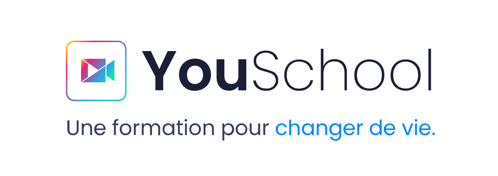
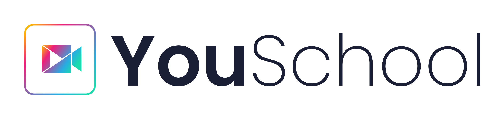
- Version horizontale par défaut
- Fond blanc ou gris clair #F5F7FE
- Symbole seul sous 120px de large
- Fond foncé → version Dark
- Couleur impossible → niveaux de gris (N80), exceptionnel
- Recoloriser le gradient
- Déformer ou étirer
- Changer la typographie ou la couleur du texte
- Réorganiser les éléments
*Lorsque l'utilisation de la couleur est impossible, le logo peut passer, à titre exceptionnel, en niveaux de gris (noir 80%).
Integrations & partners
Réassurance cards used across the site, financing eligibility, quality certifications, social proof, and awards. Extracted from -- Réassurance // CPF in the Figma.
Certifications & labels
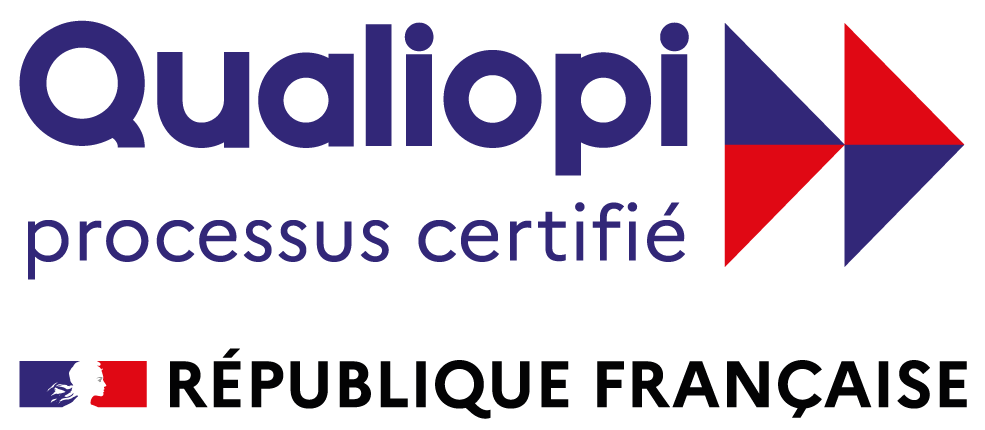
La certification qualité délivrée au titre des actions de formationSocial proof figures
Partner logos
27 marks · from Assets-site.figSector partners used in the course-page carousels. Organised by vocational sector to match the site's Partenaires / Carrousel frame. Two marks (Prowear, Cousette) are SVG-only in the Figma, shown with a styled tile here.
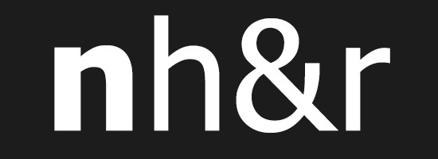
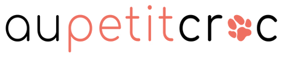
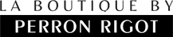
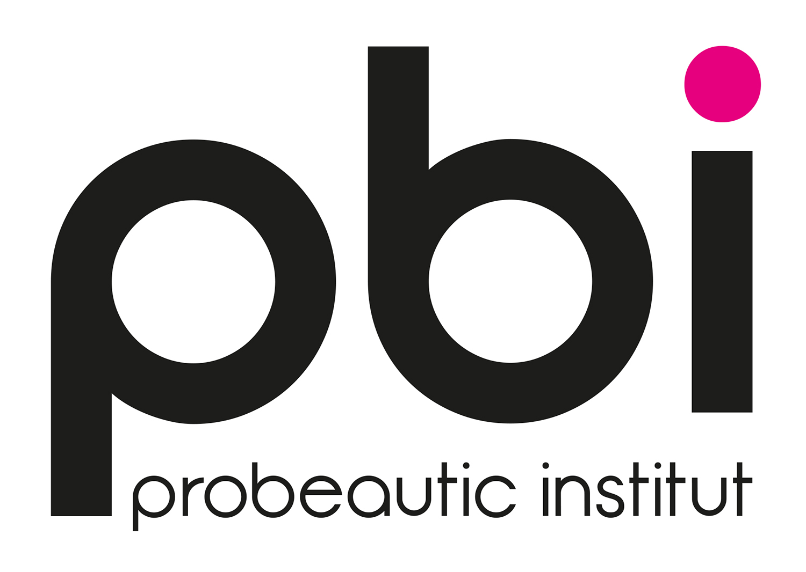
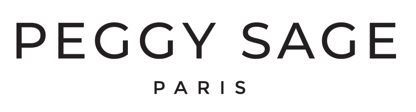
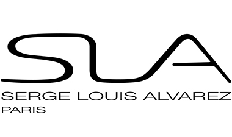
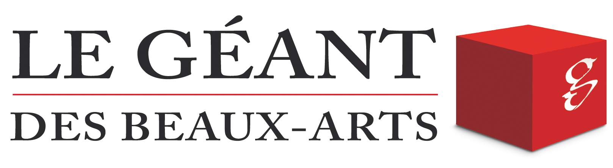
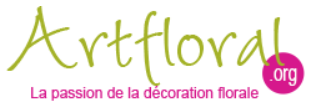
Prowear and Cousette are SVG-composed marks in the Figma (no bitmap export), shown as styled tiles. Sector colour coding matches the Sector themes token set on the Foundations → Color page.
Badge
radius/badge · tinted 50 bg · AA-safe text
Usage, Read-only status or category labels. An icon belongs only inside semantic badges; a badge is never clickable, use a tag or button for that.
Input
ORIGINALradius/button · shadow/focus-ring · danger.500 on error
Usage, Single-line text entry, always with a visible label. Keep the focus ring; surface errors inline below the field.
Checkbox & radio
ORIGINALradius/sm 6px (check) · radius/full (radio) · 20px control · click to toggle
Usage, Checkbox for independent multi-select, radio for one-of-many. Make the whole row clickable and stack options when labels wrap.
Toggle
ORIGINAL44×24 track · radius/full · knob 20px · duration/base · click to toggle
Usage, Immediate on/off settings that apply with no save step. If a choice needs confirmation, use a checkbox in a form instead.
Select & textarea
ORIGINALradius/button 10px · native control · focus/ring · chevron 16px
Usage, Native select for 4+ preset options; textarea for free multi-line input. Below ~4 options, prefer radios for faster scanning.
Phone input
ORIGINALcountry prefix · dial code · used on the lead form (étape Coordonnées)
Usage, Lead and contact forms. Keep the country prefix selectable, auto-format the national number, and validate before submit.
Tag
SITEradius/full · topic markers & filter chips · removable variant
Usage, Topic markers (#Essentiel) and removable filter chips. Tint follows the sector palette; keep tags non-interactive unless they carry a remove control.
Avatar
SITEmonogram chip · tinted bg · radius/full · sizes 28 / 36 / 44 · group + status
Usage, Monogram chips for people; overlap and cap with +N for groups. Add the status dot only where presence actually matters.
Rating
SITEstar/full #F59905 · Trustpilot read-out · click to set
Usage, Read-only score display (Trustpilot) or an interactive star input in feedback forms. Always pair the stars with the numeric value for screen readers.
Tooltip
ORIGINALslate-900 surface · z.tooltip 600 · 6px radius · shown for reference
Usage, Short supplementary hints on hover/focus, never essential information. One line; the trigger must stay usable without it.
Loading
ORIGINALspinner · skeleton (shimmer) · progress bar · respects prefers-reduced-motion
Usage, Spinner for short waits, skeleton for content filling a known layout, progress bar for determinate tasks. Respect prefers-reduced-motion.
Divider
SITEborder/default · horizontal · vertical · with label
Usage, Separate content groups. Use the labelled variant to break long forms ("ou"); keep the hairline at the default border token.
Card
ORIGINALradius/card · shadow/md, widely used on site, no Figma component before
Usage, The system's atomic surface for grouping related content. One primary action per card; add the hover shadow only when the whole card is clickable.
Selector
6 variantsContextual filter widgets embedded in blog posts, article pages, and sector landing pages. Each variant targets a different content context, status filtering, sector/formation selection, and testimonial surfacing.
Usage, Compact pickers that filter or switch context (sector, formation, testimonial). Pre-select a sensible default and keep options short.
Choisissez une formation pour afficher les témoignages d'élèves
Choisissez une formation pour afficher les témoignages d'élèves
Alert
REDESIGNED v0.3.0Full-tint surface with a soft same-hue border, a solid semantic icon shape (circle / triangle / octagon, the shape itself signals status, not just colour), a bold dark-hue title and a matching dismiss control.
Usage, Inline, contextual messages tied to a section. Use the semantic colour and icon together; reserve toast for transient page-level feedback.
Bienvenue ! Votre espace élève est désormais accessible.
Il vous reste peu de place de stockage pour vos documents.
Une erreur est survenue. Vérifiez vos informations et réessayez.
Votre financement CPF est en cours d'instruction. Réponse sous 48 h.
Stat tile
metric · label · radius/card · shadow/md
Usage, A single KPI with a label and optional trend chip. Keep the numeral bold and the label muted, one metric per tile.
Stepper
ORIGINAL34px node · done / current / upcoming · drives the multi-step lead form
Usage, Multi-step flows (lead form, onboarding). Show every step, distinguish done/current/upcoming, and let users step back.
Form validation
ORIGINALhelper / error / success · message tied via aria-describedby · status never by color alone
Usage, Field feedback, helper, error, success. Tie the message to the field via aria-describedby; never signal by colour alone.
Formation card
SITEcatalog unit · sector header · CPF badge · price · radius/card 20px
Usage, Catalog tile for a diploma. Lead with sector + title, show the CPF badge when eligible, and keep a single Découvrir CTA.
Tabs
SITEunderline indicator · blue/600 active · duration/fast · click to switch
Usage, Switch between peer views of one subject (programme / débouchés / avis). Keep 2–5 tabs and never nest tab bars.
{{ tabBody }}
Toast
ORIGINALsnackbar · aria-live · auto-dismiss · floating bottom-center · z.toast 500
Usage, A toast confirms an action just happened, then leaves. It is not an Alert: Alerts are inline, persistent and tinted to the message status; a toast is a single floating dark snackbar at the edge of the viewport, one line plus one optional action, and it dismisses itself.
Alert vs Toast — reach for Alert when the message must stay on the page (form errors, page-level notices). Reach for Toast for ephemeral confirmation ("Enregistré", "Lien copié") that should disappear on its own.
Pagination
ORIGINAL36px control · blue/600 current · prev / next · click to navigate
Usage, Paginate long lists when infinite scroll doesn't fit. Always expose prev/next and the current page; keep the range compact on mobile.
Empty state
ORIGINAL32px feature icon · short title · one primary action
Usage, First-run and no-results states. One short explanation plus a single recovery action (reset filters, add item); keep the tone encouraging.
Aucune formation trouvée
Aucun résultat ne correspond à vos filtres. Élargissez votre recherche pour voir plus de formations.
Dropdown
ORIGINALtrigger + flyout · radius/button · shadow/md
Usage, A menu of actions or options opened from a button. Close on outside-click and Esc; for selecting a form value, use a select instead.
FAQ accordion
expandable · chevron rotates · interactive
Usage, Progressive disclosure for FAQs and long secondary content. Prefer one open at a time on dense pages; keep headers scannable.
Sector card
FROM ASSETS-SITE"Card Listing secteur" · centred picto → title → checklist · radius 20 · inset 2px #E8ECFD
Usage, Sector entry card (centred picto → title → checklist). Use the sector's own colour and keep the checklist to 3–5 concrete items.
Métiers de bouche
Animaux
Pricing card
SITEprice · feature list · « populaire » variant · CPF mention · radius/card 20px
Usage, Offer comparison. Highlight one plan with the « populaire » treatment; always surface CPF financing and keep one CTA per card.
Back to top
ORIGINAL44px target · appears after scroll · radius/full · shadow/md
Usage, Long pages (article, catalogue). Fades in past the first fold, fixed bottom-right, never overlaps the sticky mobile CTA.
Modal
ORIGINALoverlay · radius/card · shadow/xl
Comparison table
NEW v0.3.0 · MOBILE-FIRSTOne dataset, two renderings. The same cells render as a full grid on desktop and as a swipeable / focusable card stack on mobile, nothing is hidden or removed, so every value stays in the DOM and crawlable. That's the fix for the density problem: stop deleting content, change how it's navigated.
Why it helps SEO & density: the markup is a single source of truth rendered responsively, no display:none duplicate tables, no content stripped for small screens. Desktop keeps full at-a-glance visibility; mobile trades width for vertical depth and gesture.
Horizontal snap-scroll, columns peek at 81% so the swipe is discoverable. Best for side-by-side decisions.
No horizontal scroll, pick one option, read its full spec vertically. Best for reading depth on a single thumb.
A single popular flag tints the column on desktop and the card header on mobile, one source, both views.
Data table
NEW v0.3.0 · RECORD → CARDThe other table archetype: many records, several short fields, and one long free-text column, the real density killer (this is the table the SEO team fought). A column-swipe would bury the long text, so the mobile rule flips: each row becomes a record card. Short fields pair up; the long field gets full width. Vertical only, no horizontal scroll, every cell still in the DOM.
Length is managed with a filter, not deletion: the continent chips below narrow what's shown on both views while the full dataset stays in the markup. One filter state drives the desktop grid and the mobile cards.
Records (rows you read down) → record cards. Options (columns you weigh against each other) → the Comparison table's swipe/focus.
"Particularité" gets full card width on mobile instead of being clipped in a narrow cell, the content that caused the problem is the content that reads best.
Length is handled by the continent filter; the full markup stays present and crawlable.
Testimonial
ORIGINALavatar · rating · quote · verified badge
« J'ai pu me reconvertir à mon rythme, tout en gardant mon emploi. Les vidéos sont claires et les coachs disponibles. »
Avis vérifiéArticle card
ORIGINALthumbnail · category badge · title · meta
Card grid
The live site's measured grid gap is 40px, which isn't a clean multiple of the 7px spacing unit. This grid uses space/4 (21px) per the token spec. New pending decision, needs a human to reconcile rather than silently picking one.
Pâtisserie
Diplôme d'État, à distance.
ASSP
Accompagnement, soins, services.
ATSEM
Préparation complète en ligne.
Form
Demander de la documentation
App components
Status badges
Onboarding stepper
Activity / KPI card
Sidebar nav item
pill 9999px · active #E8F1FE bg + coral #F2506E icon · idle #9AA1BD icon
Composer
feed entry · monogram avatar + pill prompt
Course list item
play disc · title + topic tag · state badge (Terminé / Non lu / À faire)
Publication card
feed post · author + Professeur badge · region tag · body
Un reportage à ne pas manquer sur « l'illusion du carton par la terre », pensez à le partager avec vos camarades.
À la une card
dashboard feature · eyebrow w/ icon · body · ghost CTA
Weekly streak
flame KPI · 7 day discs (done = brand blue, idle = #F1F3F9)
Défi & groupe cards
challenge w/ state · group w/ member avatars
Mobile menu (drawer)
SITEburger open · full nav · scrim · 44px rows
Usage, The header's mobile state. Full-height panel over a scrim, sector list + CTA, every row a 44px target.
CTA sticky mobile
SITEfixed bottom bar · price + primary CTA · shadow up
Usage, Formation pages on mobile. Pins the conversion action to the thumb zone; keep a short value reminder on the left.
Promo bar + countdown
ORIGINALoffer · live countdown · dismissable
Usage, Time-boxed offers. One message, a live timer, and a close button — never stack with the announcement bar.
Programme / Curriculum
ORIGINALmodule accordion · duration per module · count
Usage, Formation page syllabus. Each module shows its duration and lesson count; the first module is open by default.
Table of contents
ORIGINALsticky sidebar · active section highlighted · anchor links
Usage, Long articles and guides. Sticky on desktop, the current section is marked with the brand accent rail.
Video modal
ORIGINALlightbox · poster + play · scrim · close
Usage, Testimonial and presentation videos. A poster with a play button opens the lightbox; trap focus and close on Esc / scrim click.
Features section
SITEUsage, 3–4 column grid of arguments (icon + title + text). Keep each blurb to one line of value.
Pricing section
SITEUsage, 2–3 pricing cards side-by-side with the « populaire » plan raised. See the Pricing card molecule for the unit.
Toutes nos formules sont finançables à 100 % par le CPF.
Stats section
SITEUsage, Key numbers in a row — reassurance band. Pair with the Stat tile molecule.
Testimonials section
SITEUsage, Grid of testimonial cards with a satisfaction headline. Pair with the Testimonial molecule.
{{ q.text }}
CTA section
SITEUsage, Full-width call to action. One headline, one primary CTA, optional reassurance line.
Un conseiller vous rappelle gratuitement sous 24 h.
Trust section
SITEUsage, Certifications and partner marks band. Name-only placeholders here — swap official assets in production.
Page hero
2 variants · WCAG AAFull-bleed hero banner used at the top of sector pages and high-level pages. Left-anchored text sits over a black→transparent gradient ensuring WCAG AA contrast (≥4.5:1) for all text. Right side features the brand origami motif. Swap the background image via the image-slot.
Lead forms
interactive · 3 stepsMulti-step lead capture form, contained card that embeds anywhere: sidebar, blog post, sector page, pop-in. Formation is pre-set by context; the header shows the icon and name automatically.
Contained card, 3 steps
Template — Home
PAGEAssemblage, Header → Hero → Features → Formations → Trust → CTA → Footer. Ouvrez en aperçu appareil pour le rendu mobile.
Template — Page Formation
PAGEAssemblage, Fiche produit : breadcrumb → hero prix/CPF → programme → réassurance, avec CTA sticky mobile.
Template — Page Catégorie
PAGEAssemblage, Liste formations : titre catégorie → filtres → grille de Formation cards.
Template — Blog / Liste
PAGEAssemblage, Index articles : titre → grille de Blog cards (catégorie, titre, date, extrait).
Template — Article
PAGEAssemblage, Single post : breadcrumb → titre → author box (E-E-A-T) → corps → ToC sticky.
Template — Contact / Lead
PAGEAssemblage, Capture : formulaire Lead + colonne réassurance (rappel gratuit, CPF, satisfaction).
Changelog
A dated record of what this build produced and what it deliberately left open.
- Replaced the placeholder lockup cards with accurate charter content drawn from Charte.fig / Uniquement-logos-et-typo: real logo asset (logo-horizontal.png), dark version, constrained grayscale (N80, exceptional), and symbol-only variant.
- Added an Anatomie row (symbole, logotype, gradient exact stops at 134.5°) and a full Do / Cas limites / Don't grid matching the charter's verbatim rules.
- The « Exporter en JSON » modal footer had two stray Fermer buttons (one a corrupted duplicate). Removed both, the header × and outside-click already close the modal.
- The Tokens categories (brand, accents, badges, gradient, typography, spacing, radius, shadows, layout) were each rendering as a separate page. They're now one continuous page under a single Tokens sidebar entry, since the JSON export covers the whole set anyway.
- Replaced the stray blue→purple #0F6FE5→#6A4DEA on the Foundations gradient card and the app-screens reconciliation row with the real brand gradient #fbb03b→#ed1e79→#29abe2→#19dbad (-45°), and re-flagged it as decorative (its light stops don't meet text contrast), matching the Tokens page, Installation and apollo-tokens.json.
- Atomic-structure ladder now shows all five Brad Frost stages, atoms → molecules → organisms → templates → pages, plus Apollo's own Sections tier, with a note on the template-vs-page distinction.
- Fixed stale token references in Installation and Design tokens: --apollo-* → --ys-*, correct radii (8/10px), and the real brand gradient (was a stray purple one). Added Sections to the component tiers list.
- Generalised the Button exemplar into a data-driven spec panel, right-click any component → Spec d'implémentation, opening props, tokens, states, accessibility and do/don't. Specs now live alongside the CSS/HTML/JS in the same right-click menu.
- Authored specs for every component across all five tiers (atoms → templates), held in component-specs.js.
- Introduced a collapsible Spec d'implémentation block for developers, props, tokens, states, accessibility and do/don't, co-located with the live demo. Shipped on Button first to settle the format before rolling it out to the rest of the library.
- Created the real apollo-tokens.json the docs reference, generated from the canonical Tokens-page model. The export modal now has a Télécharger .json button (downloads the file), not just copy-to-clipboard.
- Regenerated tokens/fig-tokens.css from the same model so the CSS and JSON agree, replacing the older Figma-export file that carried a competing Core/Theme architecture.
- Note, the old export's theme aliases, interactive-state and per-component (button/input) tokens, and sector brand pairs were dropped, they aren't part of the canonical model yet.
- Added a prominent banner on Getting Started: the external build team codes to Apollo's tokens and components, not to whatever the current app ships, where the live Plateforme drifts (e.g. system-ui vs the prescribed Poppins), Apollo wins.
- The previous Tokens page carried invented values (a fake primary ramp, a non-existent secondary, marketing type sizes). Rebuilt it to trace 1:1 to the YouSchool token source, now every token is present.
- Added the categories that were missing: 4 brand blues, 8 neutrals, 5 accents, 9 badge bg/fg surface pairs, the full Poppins scale (11 sizes, 5 weights, 4 line-heights, 2 letter-spacings), all 8 radii, 3 shadows, 12 spacing steps and the 3 layout constants.
- The Figma / Tokens Studio export now emits the complete, correctly-typed set (color / spacing / borderRadius / boxShadow / typography / sizing).
- Audited the version history against semver.org, numbering is compliant (monotonic, no leading zeros, patch resets to 0 on every minor bump).
- Documented the rules that were implicit: deprecation bumps minor (§7), breaking changes bump b while at 0.x (§4), defined Apollo's public API, and clarified that v is display-only and beta is component maturity, not a SemVer pre-release tag.
- New Tokens page lists every token, Core palettes, Theme aliases, spacing, radius, shadows, the brand gradient and the Poppins type scale.
- Export en JSON emits a Tokens Studio-formatted file, importable into Figma via MCP or the Tokens Studio plugin.
- Removed the "Token source of truth" eyebrow, collapsed Sources reconciled and Reconciliation notes into a single accordion (closed by default), and removed the Plateforme app-kit roadmap from the Overview.
- Replaced the cryptic NEW · NO PRIOR SPEC inline tag with a clear ORIGINAL across all 24 components, the amber counterpart to the green SITE provenance tag. Updated the Versioning page legend to match.
- Rewrote the Versioning page to spell out the a.b.c scheme (major held at 0 until approved), the Conventional-Commits rule, and one-feature-per-release.
- Documented all four badge families, maturity (stable / beta / deprecated), destination (BOGY · desktop / Site / Plateforme / Global), inline section tags, and global header badges.
- BOGY (CRM) is an internal desktop tool, never used on mobile. Its surface pill now reads BOGY · desktop with a tooltip making the desktop-only constraint explicit.
- Sidebar categories are now collapsible accordions, closed by default, one open at a time, with a rotating chevron.
- Toast is now a floating dark snackbar (inline action + auto-dismiss bar), no longer a duplicate of the inline tinted Alert; the page documents when to use each.
- Every element now carries a destination pill, BOGY (CRM), Site, Plateforme, or Global for shared base components.
- Built full-page Templates, Home, Page Formation, Page Catégorie, Blog/Liste, Article and Contact/Lead. All templates are flagged beta · unstable until reviewed.
- Introduced a dedicated Sections tier (Features, Pricing, Stats, Testimonials, CTA, Trust, Newsletter) so the library mirrors the ticket's Atoms → Molecules → Organisms → Sections → Templates structure.
- Added Divider (atom); Pricing card and Back to top (molecules); Mobile drawer, Sticky mobile CTA, Promo + countdown, Curriculum, Table of contents, Author box (E-E-A-T) and Video modal (organisms).
- Added a device preview on the tier pages: right-click any component, then Ouvrir dans l'aperçu appareil, to open a phone / tablet / desktop bezel rendering the live component at its real breakpoint width (375 / 768 / 1280px). The toggle lives in the header and only shows on Atoms / Molecules / Organisms / Templates.
- The panel carries a filetree breadcrumb of the element's ancestry (section › div › …) plus a row of its children, so you can climb to the parent card or drill into a child without re-selecting on the page.
- Documented a responsive size-variation ramp on the Breakpoints page, how display / heading / body type, icons, touch targets, card padding and grid columns step across xs / sm / lg, tagged by atomic tier.
- The changelog can now be copied as Markdown from the button in its header.
- Added the five sectors that existed only on youschool.fr: Petite Enfance (#0088FF), Nutrition (#ED1E79), Bâtiment / BTP (#EEA027), Compétences Pro (#4A4F68) and Bureautique (#0088FF). Colours and pictograms come straight from the Figma source, so they are exact, not guessed.
- They now appear in both the Color sector themes and the Sector pictograms gallery, bringing the documented set to eleven and closing the biggest site-versus-Apollo gap.
- Every component now carries a stable or beta flag next to its title, so it's clear what is safe to lean on. Data table, article, app components and lead form start as beta.
- Added a Voice & content page to the docs: language, tone, the status wording with do and don't, and the rules for eyebrows, numbers and emoji.
- Every sidebar sub-entry is now its own page showing just that one section, instead of one long scroll per group. Clicking a group heading jumps to its first page; the active page is highlighted in the rail.
- Indented the sub-entries under each group with a guide line, so the nesting is easy to read at a glance.
- Added a lightbulb in the header that opens a short "what's on this page" summary for wherever you are.
- Resolved the last open decision (magenta-scope). Magenta #ED1E79 is the missing Métiers de bouche / Restauration sector accent, added as sector/bouche (primary #ED1E79, secondary #FFE9F3) alongside the other five sector themes, which the page already used for that sector verbatim.
- Not promoted to a brand-wide accent: its 547× frequency reflects a high-traffic food funnel, not system-wide use. Non-sector uses (required-field asterisks) are reassigned to the semantic danger token; decorative funnel art stays sector-derived.
- Apollo now has zero open decisions; the Overview panel shows an all-clear state.
- Added gradient/brand (#0F6FE5→#6A4DEA) and gradient/brand-vivid to the token file, and renamed the neutral ramp to slate so the JSON matches the Color page (one neutral scale).
- Added a Usage guidance line to every atom (13) and molecule (15), when and how to reach for each component.
- Resolved the CTA-pulse decision (fix): the indefinite orange A/B pulse is dropped, WCAG 2.2.2 (Pause, Stop, Hide) requires >5s auto-motion to be controllable, in favour of a brand-blue static rest shadow + user-initiated hover halo, suppressed under reduced-motion. Only magenta-scope remains open.
- The Color page carried two neutral subcategories (a legacy Neutral family and the new Slate ramp). Removed the legacy family so there is a single neutral scale, Slate. Usage rules renamed neutral/* → slate/* to match.
- Documented the Slate neutral ramp on the Color page, color/slate/50–950 (#F5F7FE → #050B2B). Apollo's cool blue-grey signature, distinct from flat Tailwind-style grays, with a WCAG verdict per step (slate/600+ AAA body · slate/400 AA large/UI only · slate/50–200 non-text).
- Applied slate/200 #BCC2E3 to the doc-chrome frame (header, sidebar, search) for a recognizably slate edge.
- Added a Documentation page (after Overview), Getting started, Installation, Design tokens, Using components, Atomic structure, and Versioning & contribution, with code samples and a Don't/Do tokenisation example.
- Added a taxonomy search bar at the top of the sidebar, live filter across Atoms / Molecules / Organisms / Templates, with tier tags and jump-to-component.
- The sidebar menu now spans the full width of its container (removed the 100px left indent).
- Added a DRUIDS-style right-click menu on tier component specimens: Afficher le code CSS (extracts the element's computed CSS into a copyable modal) plus guide / GitHub / Figma links (placeholders).
- Each tier page carries a discoverability hint for the right-click action.
- Reorganized the library into the Atoms → Molecules → Organisms → Templates ladder, replacing the flat Components / Patterns / Plateforme grouping. No component was changed, only re-tiered.
- Atoms (13), button, badge, input, checkbox/radio, toggle, select, phone, tag, avatar, rating, tooltip, loading, breadcrumbs. Molecules (15), card, selector, alert, stat, stepper, validation, formation card, tabs, toast, pagination, empty state, announcement bar, dropdown, accordion, sector card.
- Organisms (10), modal, comparison & data tables, testimonial, article, card grid, form, navbar/mega-menu, footer, app components. Templates (2), page header, lead form.
- Brand gradient and app density moved into Foundations, they are tokens, not components.
- Added the Plateforme page, the learner & coach app mode, grounded in the real product screenshots: brand gradient, app density tokens, and app components.
- Promoted the brand gradient to canon as gradient/brand (#0F6FE5 → #6A4DEA), both stops ≥ 4.5:1 on white, so white text is AA at any size. The brighter as-observed brand-vivid is limited to large/bold text or text-free fills. Gradients stay app-only; the site remains flat.
- Documented app density (18px card radius, 20px padding, 212px sidebar, 64px header, #F5F7FD canvas) and a growing app-component set, status badges, sidebar nav-item states, composer, course list item, publication card, à-la-une card, weekly streak, onboarding stepper, activity/KPI cards, and défi/groupe cards. The full interactive shell lives in YouSchool Plateforme.dc.html.
- Added a Plateforme app-kit roadmap to the Overview, the learner & coach surfaces, the denser app mode, and the new components an app build would need.
- Scoping only: flagged as not-yet-built, pending a reconciliation pass over the Middle Plateforme codebase before promoting app density / components to tokens.
- Completes the three-phase response to the DRUIDS / youschool.fr gap analysis (foundations → site components → app scope).
- Added 12 youschool.fr components: formation card, tabs, tooltip, toast, avatar, tag, rating, breadcrumbs, pagination, loading (spinner / skeleton / progress), empty state, and the dismissible announcement bar.
- Tabs, pagination, rating, and the announcement bar are interactive; all are built only from existing tokens and the sector pictogram assets.
- Closes the DRUIDS / youschool.fr component gaps identified in the analysis. Phase 3, the Plateforme app kit, is next.
- Added Motion foundation, duration scale (instant → slower), easing tokens, a live demo, and a prefers-reduced-motion rule.
- Added Accessibility foundation, verified contrast table (with the small-text #0088FF → #0458D6 rule), focus ring, target size, and a keyboard / screen-reader checklist.
- Added the form-control suite: checkbox, radio, toggle, select, textarea, phone input, stepper, and form-validation states, interactive, built only from existing tokens.
- Gap analysis against DRUIDS and youschool.fr drove this phase; Phase 2 (site components) and Phase 3 (Plateforme app kit) are queued.
- Design Principles page, 6 principles (Clarity, Consistency, Accessible by default, Purposeful hierarchy, Systematic, Designed to evolve) in 2-col card grid; nav entry added between Overview and Foundations.
- 4 new Foundations sections, Layout & Grid (4 surface configs + container max-widths), Icon scale (xs/sm/md/lg, moved to Icons section), Z-index & Depth (9-layer dark-to-light stack), Breakpoints (xs–xl visual diagram + spec table).
- 27 partner logos extracted from Assets-site.fig and organised by vocational sector (Métiers de bouche, Animaliers, Beauté & ongles, Mode & couture, Art floral & déco) on the Logos page.
- Integration logos (Réassurance section) rebuilt from the real Figma -- Réassurance // CPF page, CPF, Qualiopi, Préfecture de Paris, La French Tech, Speak & Act bitmaps + social proof stat cards (40 000 apprenants, 4.8/5, 23 formations).
- Selector component (Components page), 6 variants: status compact (white + light-blue bg), formation horizontal, status inline, testimonial wide + narrow. All dropdowns live.
- Lead form (contained card), 3-step interactive: identity → profile → contact. 300px card with blue ring border, formation icon header, FR flag phone prefix, consent checkbox.
- Mega-menu prototype (Patterns page), full 3-level hover-driven fly-out matching youschool.fr: 10 sectors → formations → sub-pages. Native DOM mouseenter/mouseleave for reliable open/close; pre-computed active-state styles; overflow:hidden removed from wrapper so the absolutely-positioned panel is not clipped.
- 27 partner logo marks added to Logos page, extracted directly from Assets-site.fig / Partenaires / Carrousel. Organised by vocational sector: Métiers de bouche (7), Métiers animaliers (7), Beauté & ongles (8), Mode & couture (5), Art floral & déco (2). Prowear and Cousette are SVG-composed marks in Figma (no bitmap), shown as styled tiles.
- Icon scale moved from Foundations to the Icons section (UI icons → Sector pictograms → Icon scale), better information architecture.
- Logos TOC updated with Partner logos anchor; placeholder "PLACEHOLDER" callout on Integrations removed.
- Fidelity pass against Assets-site: sector pictograms rebuilt from real Figma SVGs (Pictos-Puces) with correct sector colours; Sector card rebuilt to the real "Card Listing secteur" layout (centred picto → underlined checklist); Unicode icon misuses (▾ ×) replaced with SVGs; video-camera & academic-cap corrected to canonical Heroicons.
- Alerts redesigned to full-tint surface + solid semantic icon shapes (circle / triangle / octagon) matching the supplied reference, dropped the Flowbite flat-tint pattern.
- Version numbering corrected from v1.x.x → v0.x.x across doc + apollo-tokens.json (unpublished system).
- Two responsive table components added for the mobile-density / SEO problem: Comparison table (options → swipe/focus columns) and Data table (records → expandable-accordion on mobile, continent filter). Content stays in DOM, no display:none duplicates.
- Data table seeded with the real country reference table provided by the team; mobile pattern rebuilt from nested-scroll cards → expandable accordion (compact rows, tap to reveal long Particularité field).
- Apollo icon (spartan helmet) added to the top-bar, replacing the placeholder "A" letter badge.
- Design Principles page added (6 principles: Clarity, Consistency, Accessible by default, Purposeful hierarchy, Systematic, Designed to evolve) between Overview and Foundations in the nav.
- Four new Foundations pages: Layout & Grid (4 surface configs + container max-widths), Icon scale (xs/sm/md/lg with usage), Z-index & Depth (9-layer stacking scale), Breakpoints (xs–xl visual diagram + specs table).
Reconciled against the live-site asset library (Assets site.fig, 224 component sets, 150 Figma Variables)
- Accent decision RESOLVED: teal/magenta are a per-sector theme system (Variable collection, ma / beauté / secrétariat / créativité / mrp, each Primary + Secondary), not drift. Promoted to a Sector themes family on the Color page.
- Correction: real brand teal is #0095AD (sector/ma). The v0.1 sample #5EEAD4 was wrong, dropped.
- Primary ramp corrected to the Figma variables: 600 = #1C64F2, hover 700 = #0458D6, active 900 = #233876 (v0.1's #007AE6 hover was an interpolation).
- New: Interactive (semantic) token layer, primary/secondary/neutral/danger/ghost × default/hover/active/disabled, lifted from color/theme/interactive/*. Closes the old "components not yet defined" gap.
- Button radius is size-scaled (4/6/8/10px), not a single 10px. Spacing base is a clean even scale in the variables (6–20px), v0.1's "7px base" flagged as a capture artifact.
- Icons & Logos pages added from the asset library; Alert / Stat / Sector card / Testimonial / Article / FAQ components and Navbar / Lead form / Footer patterns added.
- Fidelity pass against Assets-site: sector pictograms now use the real copied SVGs (Pictos-Puces) with correct sector colours (bouche #ED1E79, beauté #996CED, animaux #0095AD, santé #222831, créativité #DF5D5F, secrétariat #29967C); the Sector card rebuilt to the real "Card Listing secteur" layout (centred picto → title → underlined checklist); Alerts redesigned to the supplied reference, full-tint surface, solid semantic icon shape (circle / triangle / octagon), bold dark-hue title, matching dismiss control; and Unicode glyphs used as icons (▾ × ★) replaced with real SVGs per the icon guidelines.
- Two table components added for the mobile-density problem: a Comparison table (options → swipe/focus columns) and a Data table (records → record cards, with a continent filter), both keeping every cell in the DOM (SEO-safe; no display:none duplicate tables).
Still open after reconciliation
- Magenta #ED1E79, used 547× but not in the Variable collection like the sector themes. Confirm whether it becomes a named token or stays a campaign one-off.
- CTA pulse animation, unchanged from v0.1; still a conversion + WCAG 2.2.2 decision for the CTA-performance owner.
Built this session
Deliberately skipped
- color.accent_unconfirmed.*, teal & magenta appear only on Financement/Alternance templates, in no Figma source. Pending the funnel-page owner's confirmation.
- shadow.special.cta-pulse, off-brand orange pulse injected by an A/B tool, likely WCAG 2.2.2 violation. A conversion decision; needs the CTA-performance owner.
New gaps surfaced, need a human decision
- Grid gap vs spacing scale: live card grid uses 40px, not a multiple of the 7px unit. Flagged on the Card grid pattern.
- Marketing vs product headings: marketing H1 ships 45px/700 against this scale's 31.5px/500. Two contexts to reconcile or converge.
- Secondary color scope: color/secondary (Plateforme gradients) not yet confirmed for use outside Plateforme. Review during component pass.
- Sector pictogram hues: the per-sector category colors (Restauration #ED1E79, Beauté #5145CD, …) are pulled from the live mega-menu but are not Apollo tokens, candidates pending the accent-colors decision. Icons page flags them.
- Partner/integration marks: CPF, France Travail, Qualiopi, Trustpilot etc. shown as name-only placeholders. Swap in each owner's official asset before production.